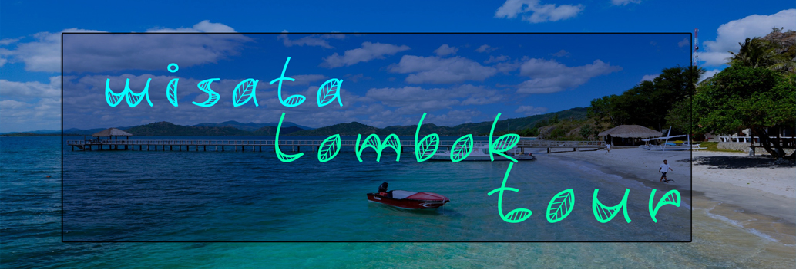
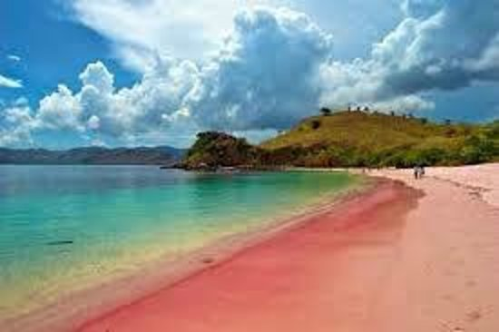
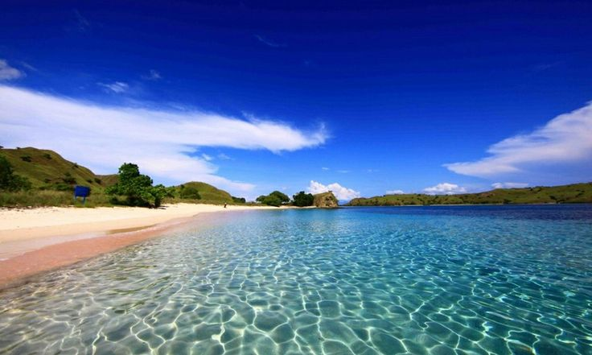
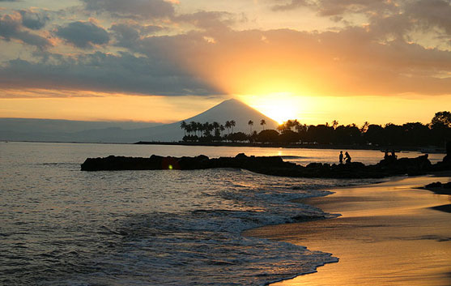
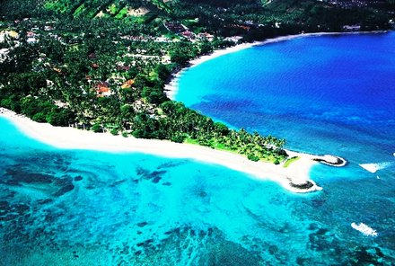
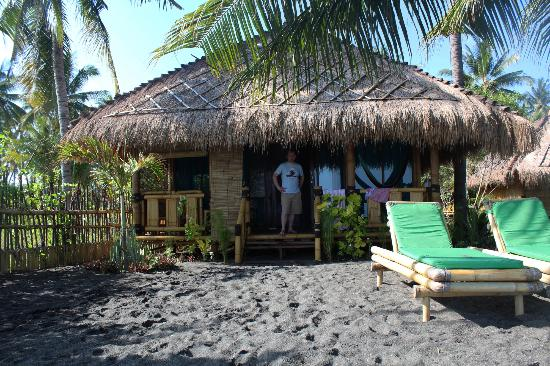
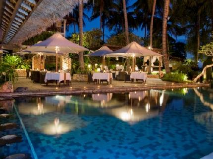
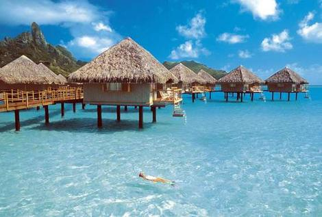
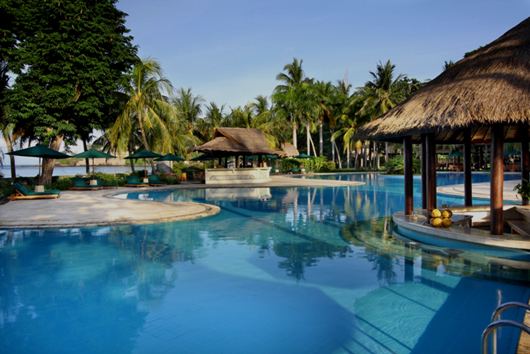

|  |
|
Selama ini Pantai Pink yang kebanyakan orang Indonesia tahu hanya ada di Flores, NTT. Ternyata Lombok juga punya, lho! Ini dia Pantai Pink alias Pantai Tangsi di Jerowaru, Lombok Timur, Nusa Tenggara Barat. Dulu Pantai Pink ini dikenal dengan nama Pantai Tangsi. Pantai yang berada di Desa Pemongkong, Jerowaru ini hanyalah pantai transit untuk nelayan-nelayan yang berasal dari Desa Tanjung Luar, Keruak. Pantai Tangsi atau yang lebih dikenal dengan Pantai Pink dari Pulau Lombok terletak di desa Sekaroh, kecamatan Jerowaru, kabupaten Lombok Timur adalah sebuah destinasi wisatawan yang menarik dan patut untuk dikunjungi karena keunikannya. Pantai ini merupakan salah satu dari tujuh pantai di dunia yang memiliki pasir pantai berwarna pink, dan satu dari dua pantai di Indonesia yang memiliki pasir pantai berwarna pink. Warna pink pada pasirnya terbentuk karena butir-butir asli warna putih pasir bercampur dengan serpihan karang merah muda. Bias sinar matahari dan terpaan air laut menambah semakin jelas terlihat warna pink pantai tersebut. Pantai ini begitu tenang dan hanya memiliki ombak yang kecil sehingga membuat wisatawan lebih nyaman ketika bermain disana. Keindahan Pantai Pink pun terlihat sempurna dengan hamparan bukit di sekelilingnya. Di sisi kiri ada bukit dengan padang rumput yang luas dan dari bukit inilah pemandangan Pantai Pink terlihat sangat indah. Selain itu, ada juga tanjung yang eksotis di sisi kanan dengan gazebo yang memang disediakan di atasnya. Rute menuju Pantai Pink ini, wisatawan seolah membelah hutan lindung Sekaroh. Wisatawan harus menempuh jarak sekitar 10 km dari pusat Desa Pemongkong dengan melewati jalanan aspal yang berlubang dan cukup mengocok perut jika kita tidak terbiasa menempuh jalan seperti ini. Tidak jarang kita akan berpapasan dengan kendaraan mewah. Ya, karena saat ini Pantai Pink menjadi primadona baru di Lombok. Kenapa dinamakan Pantai Pink? Kita akan tahu setelah menginjakkan kaki di pasirnya. Pasir di pantai ini terlihat berwarna pink. Warna pink pada pasir pantai ini ada karena pasir putih yang menyatu dengan butiran-butiran terumbu karang berwarna merah dan berefek kemerahan setelah bercampur air laut. Kemudian pantulan sinar matahari membuat warna pink pada pasir ini semakin terlihat. Terumbu karang berwarna merah ini tumbuh di perairan dangkal Pantai Tangsi dan terbawa ombak ke tepian. Suasana pantai yang masih sepi dan bisa dikatakan masih sangat alami (perawan) merupakan salah satu daya tarik yang sangat menarik bagi beberapa turis ataupun wisatawan lokal yang kebetulan berkunjung kepantai ini. Selain itu, keistimewaan lain yang ada pantai ini adalah warna pasirnya yang cendurung berwarna merah muda (pink). Warna ini disebabkan karena pecahan terumbu karang berwarna merah yang banyak terdapat disana, selain itu di lokasi pantai terdapat goa jepang yang berbentuk persegi yang kabarnya jika kita masuk dan menelusuri goa tersebut maka kita akan tembus ke pantai yang berada di sebelah bukit yang berada disebelah kiri pantai. Salah satu hal yang perlu diketahui oleh para wisatawan adalah bahwa disekitaran pantai tidak terdapat satu pun penjual makanan dan minuman atau pedagang asongan, yang ada hanya beberapa bangunan rumah, beruga, dan sebuah musholla kecil. Namun dirumah penduduk sekitar terdapat sumur payau yang berfungsi untuk membilas diri saja, sehingga disarankan kepada para wisatawan untuk mebawa bekal yang cukup terutama air minum. Dengan kealamian dan kebersihan pantai yang terjaga, yang bisa dibuktikan dengan tidak ada sampah yang berserakan disekitar lokasi pantai walaupun tidak terdapat tempat sampah khusus. Hal ini lah yang membuat pantai ini dikatakan surga bagi para wisatawan, karena kita bisa menikmati indahnya alam, pasir yang berwarna merah muda (pink), deburan ombak, suasana yang tenang dan nyaman, angin yang sepoi–sepoi serta cahaya matahari yang cerah membuat pikiran tenang setelah seminggu beraktivitas penuh dan jauh dari hingar bingar kebisingan. Sungguh pantai “Pink” Tangsi adalah surga di bumi khususnya Lombok. Lokasi Pantai Tangsi atau Pantai Pink terletak di desa Sekaroh, kecamatan Jerowaru, kabupaten Lombok Timur, kota Mataram, Nusa Tenggara Barat. Untuk mencapai Pantai Pink, wisatawan dapat melewati rute dari kota Mataram ke Pantai Tanjung Ringgit karena letaknya yang berdekatan. Jalanan yang rusak dan berlubang membuat wisatawan membutuhkan waktu sekitar 2 jam berkendara untuk sampai ke sana. Pintu masuk ke pantai ini, terdapat di 1 km sebelum wisatawan memasuki pantai Tanjung Ringgit, atau sebelum sampai di Pintu masuk pantai Ringgit, akan terlihat di pinggir jalan sebuah rambu yang bertuliskan ‘PANTAI PINK 50M”. Jika cuaca tidak berkabut, dari sini kita juga bisa melihat tiga gili. Air terjun pertama ini cukup tinggi dan memiliki kemiringan sekitar 45 derajat sehingga memungkinkan Anda mendaki sampai puncak air terjun tanpa alat bantu pendakian. Hal ini bisa dimanfaatkan untuk mendokumentasikan keindahan air terjun dari berbagai angle yang diinginkan baik dari sisi bawah, samping bahkan sisi atas air terjun. Kolam air terjun pertama sangat dangkal sehingga aman untuk anak-anak bahkan balita sekalipun. Aktivitas Wisatawan yang datang ke Pantai Pink dapat melakukan banyak kegiatan, khususnya kegiatan yang berhubungan dengan air seperti :snorkeling, memancing, dan menyelam. Untuk snorkeling wisatawan harus membawa perlengkapan sendiri, karena tidak ada yang menyewakan peralatan. Selain itu, wisatawan juga dapat menyewa perahu nelayan untuk mengelilingi gugusan pulau-pulau kecil yang berjarak hanya 2 km dari tepi pantai dan tidak jauh dari sekitaran pantai, wisatawan dapat menjelajahi goa peninggalan Jepang. Akomodasi Wisatawan tidak akan menemukan fasilitas lengkap dan super mewah seperti pantai pada umumnya. Anda hanya akan menemukan nelayan yang menawarkan perahu untuk mengelilingi pulau kecil dan beberapa orang yang menawarkan aneka minuman dan tidak ada penginapan. Oleh karena itu, disarankan anda pulau pada sore hari untuk kembali ke penginapan. |
|
  |